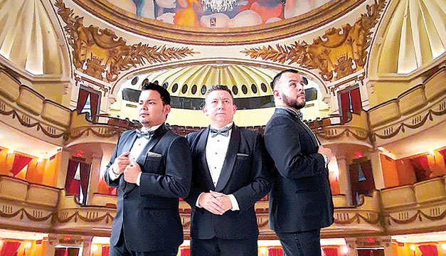
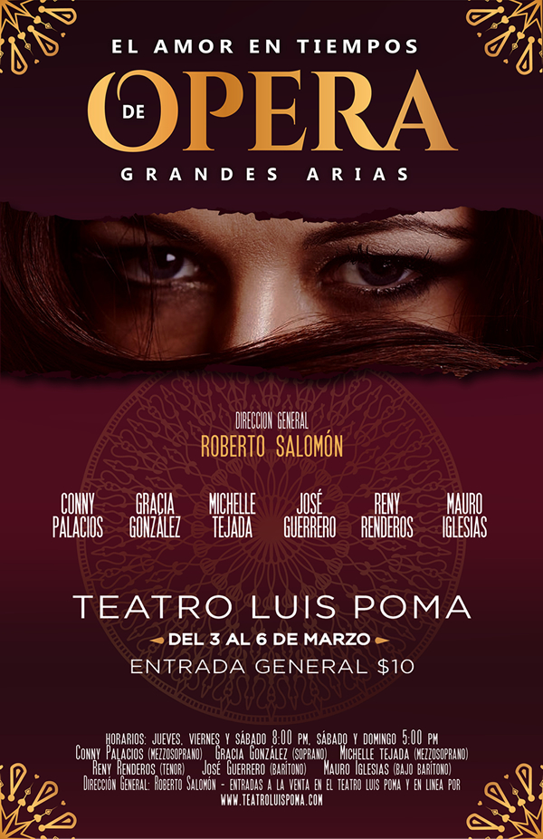
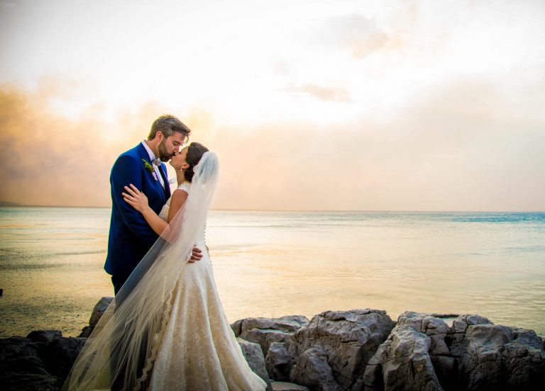

Mauro Iglesias, José Guerrero y Reny Renderos, integrantes de Opus 503, quienes fueron parte de la Ópera de El Salvador. En 2016, formaron un trío pop lírico y asi surgió el nombre “OPUS 503”.
Presentaciones

Presentaciones de Teatro
La ópera regresa a El Salvador con un espectáculo escénico totalmente dedicado a las grandes historias de amor de la literatura operística universal. Bajo la dirección de Roberto Salomón.
Gracia González, Conny Palacios, Michelle Tejada, acompañadas por los ahora integrantes de OPUS 503, se reuniran nuevamente luego de algunos años.
El Amor en tiempos de ópera, es un espectáculo musical para reflexionar sobre las diferentes formas de amar.
El último montaje de ópera en nuestro país se realizó en el año 2015 bajo la dirección del maestro Joseph Karl Doetsch, desde entonces no se ha vuelto a
realizar un espectáculo escénico totalmente dedicado a este género musical.

Cumpleaños
Con grandes melodías para cada ocasión especial, aniversarios de bodas, cumpleaños o simplemente celebrar la vida y la amistad.
OPUS 503 puede ser parte de una velada inolvidable. Con composiciones como O Sole Mio, Granada, Amor Eterno, Volare, y sin olvidar los grandes temas de Frank Sinatra.
Porque siempre hay algo que festejar ¡ Celebremos juntos la vida ! Haz de tu evento un momento inolvidable.
Llámanos o escríbenos por whatsapp al: 7741-1569

Bodas
Transforma uno de los momentos mas importantes de tu vida, con las interpretaciones magistrales de OPUS 503.
Acompaña tu ceremonia religiosa con un cuarteto de cuerdas o un virtuoso pianista, todo desde el inicio del evento hasta el momento especial de la cena.
¿Te imaginas tu boda con la interpretacion de el Ave María de Shubert, una entrada al salón escuchando Te Partiro o tu primer baile con el famoso tema Hasta Mi Final ?
Un verdadero espectáculo musical junto a los integrantes de OPUS 503.
Llámanos o escríbenos por whatsapp al: 7741-1569
Premios Recibidos
El Carbonero gana como Mejor Video del Año
El pasado viernes 28 de enero en el programa Viva la Mañana, se reveló que El Carbonero fue declarado como ganador para la categoría de
Mejor Video del Año 2021.
Obra musical del gran Pancho Lara, que OPUS 503 presentó como parte de las Conmemoraciones por el Bicentenario de la Independencia de Centroamerica.
El video clip, bajo la dirección de Bryan Henríquez y con la edición de Toti Velásquez, fue lanzado en la segunda semana
de septiembre del 2021. Manteniendo por 10 semanas las preferencias del publico.
Mauro Iglesias fue el encargado de recibir el premio a nombre del trio pop lirico, agradeciendo al publico salvadoreño por su apoyo y
confianza en cada uno de sus proyectos musicales.